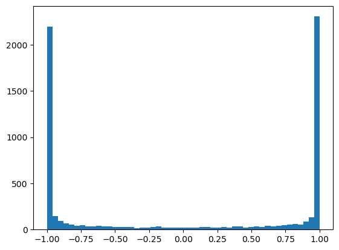
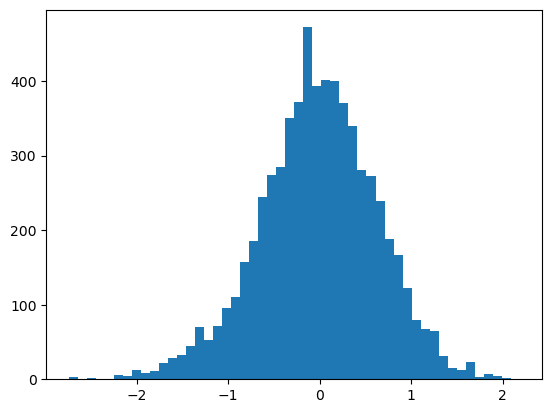
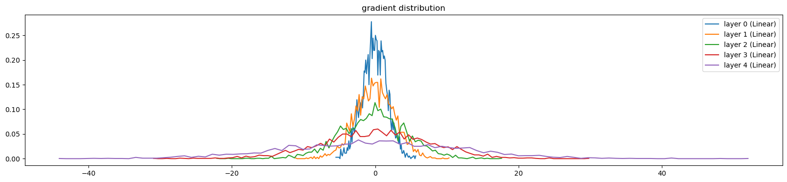
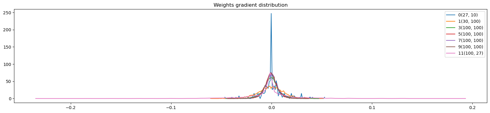
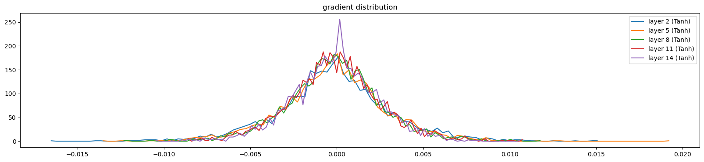
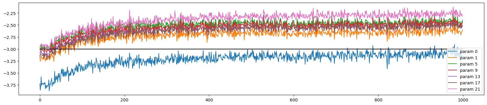

#!pip install tqdmBuilding makemore - Activations & Gradients, BatchNorm
Imports
from tqdm import tqdm, tqdm_notebook
import numpy
import torch
import torch.nn.functional as F
import matplotlib.pyplot as plot
import random
import mathg = torch.Generator().manual_seed(42)Setup
words = open('../data/names.txt', 'r').read().splitlines()
words[:8]['emma', 'olivia', 'ava', 'isabella', 'sophia', 'charlotte', 'mia', 'amelia']chars = sorted(list(set(''.join(words))))
stoi = {s: i+1 for i, s in enumerate(chars)}
stoi['.'] = 0
itos = {i:s for s, i in stoi.items()}len(words)32033def generate_training_set(words, block_size, print_disabled=False):
chars = sorted(list(set(''.join(words))))
stoi = {s: i+1 for i, s in enumerate(chars)}
stoi['.'] = 0
itos = {i:s for s, i in stoi.items()}
X, Y = [], []
for w in words:
if print_disabled: print(w)
context = [0] * block_size
for ch in w + '.':
ix = stoi[ch]
X.append(context)
Y.append(ix)
if print_disabled: print(''.join(itos[i] for i in context), '--->', itos[ix])
context = context[1:] + [ix] # crop and append
X = torch.tensor(X)
Y = torch.tensor(Y)
return X, YX, Y = generate_training_set(words, 3)X.shape, Y.shape(torch.Size([228146, 3]), torch.Size([228146]))def generate_train_valid_test_split(words, block_size=3):
random.seed(42)
random.shuffle(words)
n1 = int(0.8*len(words))
n2 = int(0.9*len(words))
Xtr, Ytr = generate_training_set(words[:n1], block_size)
Xdev, Ydev = generate_training_set(words[n1:n2], block_size)
Xte, Yte = generate_training_set(words[n2:], block_size)
return Xtr, Ytr, Xdev, Ydev, Xte, YteXtr, Ytr, Xdev, Ydev, Xte, Yte = generate_train_valid_test_split(words, block_size=3)Xtr.shape, Ytr.shape(torch.Size([182625, 3]), torch.Size([182625]))Xdev.shape, Ydev.shape(torch.Size([22655, 3]), torch.Size([22655]))Xte.shape, Yte.shape(torch.Size([22866, 3]), torch.Size([22866]))Train
def compute_logits(parameters, X):
C, W1, b1, W2, b2 = parameters
emb = C[X]
h = torch.tanh(emb.view(-1, W1.shape[0]) @ W1 + b1)
return h @ W2 + b2def _regularization_loss(parameters, lambdas):
return sum(l * (p**2).mean() for p, l in zip(parameters, lambdas))def initilialize_parameters(block_size, embedding_size, hidden_neuron):
C = torch.randn((27, embedding_size), generator=g)
W1 = torch.randn((block_size * embedding_size, hidden_neuron), generator=g)
b1 = torch.randn(hidden_neuron, generator=g)
W2 = torch.randn((hidden_neuron, 27), generator=g)
b2 = torch.randn(27, generator=g)
return [C, W1, b1, W2, b2]def train(parameters,
epochs,
X,
Y,
bs=32,
lambdas = [0, 0, 0],
enable_print=True,
print_at_every_nth_epoch=10000
):
if not parameters:
raise Exception("No initial parameters passed")
for p in parameters: p.requires_grad = True
losses = []
for epoch in tqdm(range(epochs)):
lr = 0.1 if epoch < 100_000 else 0.01
ix = torch.randint(0, X.shape[0], (bs, ))
batch_x, batch_y = X[ix], Y[ix]
logits = compute_logits(parameters, batch_x)
loss = F.cross_entropy(logits, batch_y)
regularization_loss = _regularization_loss(parameters, lambdas)
loss += regularization_loss
for p in parameters:
p.grad= None
loss.backward()
for p in parameters:
p.data += - lr * p.grad
if enable_print and epoch % print_at_every_nth_epoch == 0: print(epoch, loss.item())
losses.append(loss.item())
if enable_print: print(epoch, loss.item())
return lossesparams1 = initilialize_parameters(3, 10, 200)losses = train(params1, 200_000, Xtr, Ytr) 0%| | 50/200000 [00:00<14:51, 224.22it/s] 5%|████████ | 10086/200000 [00:16<05:14, 602.91it/s] 10%|███████████████▉ | 19993/200000 [00:36<06:22, 470.09it/s] 15%|███████████████████████▉ | 30086/200000 [00:56<05:16, 536.84it/s] 20%|███████████████████████████████▉ | 40107/200000 [01:15<04:28, 595.70it/s] 25%|███████████████████████████████████████▊ | 50117/200000 [01:34<04:09, 601.27it/s] 30%|███████████████████████████████████████████████▊ | 60073/200000 [01:50<03:55, 593.51it/s] 35%|███████████████████████████████████████████████████████▋ | 70114/200000 [02:08<03:43, 581.43it/s] 40%|███████████████████████████████████████████████████████████████▋ | 80089/200000 [02:26<03:26, 579.70it/s] 45%|███████████████████████████████████████████████████████████████████████▋ | 90115/200000 [02:43<03:00, 607.76it/s] 50%|███████████████████████████████████████████████████████████████████████████████ | 100092/200000 [03:00<02:46, 598.58it/s] 55%|██████████████████████████████████████████████████████████████████████████████████████▉ | 110109/200000 [03:16<02:30, 599.05it/s] 60%|██████████████████████████████████████████████████████████████████████████████████████████████▉ | 120106/200000 [03:33<02:08, 619.76it/s] 65%|██████████████████████████████████████████████████████████████████████████████████████████████████████▋ | 130061/200000 [03:53<04:29, 259.66it/s] 70%|██████████████████████████████████████████████████████████████████████████████████████████████████████████████▋ | 140117/200000 [04:14<01:39, 600.35it/s] 75%|██████████████████████████████████████████████████████████████████████████████████████████████████████████████████████▌ | 150090/200000 [04:30<01:20, 620.44it/s] 80%|██████████████████████████████████████████████████████████████████████████████████████████████████████████████████████████████▍ | 160095/200000 [04:47<01:02, 639.88it/s] 85%|██████████████████████████████████████████████████████████████████████████████████████████████████████████████████████████████████████▍ | 170112/200000 [05:02<00:46, 637.91it/s] 90%|██████████████████████████████████████████████████████████████████████████████████████████████████████████████████████████████████████████████▎ | 180125/200000 [05:18<00:31, 634.12it/s] 95%|██████████████████████████████████████████████████████████████████████████████████████████████████████████████████████████████████████████████████████▏ | 190104/200000 [05:34<00:15, 644.02it/s]100%|██████████████████████████████████████████████████████████████████████████████████████████████████████████████████████████████████████████████████████████████| 200000/200000 [05:50<00:00, 571.05it/s]0 27.642881393432617
10000 2.6563515663146973
20000 2.4569218158721924
30000 2.4299867153167725
40000 2.2356979846954346
50000 2.222148895263672
60000 1.997029423713684
70000 2.013292074203491
80000 2.4996888637542725
90000 2.8243627548217773
100000 2.815431833267212
110000 2.333662509918213
120000 2.5455234050750732
130000 2.3017194271087646
140000 2.1503050327301025
150000 1.8232505321502686
160000 2.411186456680298
170000 2.52275013923645
180000 2.173576593399048
190000 2.165059804916382
199999 2.3922524452209473plot.plot(losses)Evaluate Loss
#torch.no_grad()
def evaluate_loss(parameters, X, Y):
logits = compute_logits(parameters, X)
return F.cross_entropy(logits, Y)def loss_split(parameters, dataset='train'):
dataset_choices = {
'train': (Xtr, Ytr),
'valid': (Xdev, Ydev),
'test': (Xte, Yte)
}
return evaluate_loss(parameters, *dataset_choices[dataset])loss_split(params1), loss_split(params1, 'valid')(tensor(2.1137, grad_fn=<NllLossBackward0>),
tensor(2.1547, grad_fn=<NllLossBackward0>))Sampling
def generate_words(parameters, count, block_size=3):
for _ in range(count):
out = []
context = [0] * block_size # initialize with all ...
while True:
logits = compute_logits(parameters, torch.tensor([context]))
probs = F.softmax(logits, dim=1)
ix = torch.multinomial(probs, num_samples=1, generator=g).item()
context = context[1:] + [ix]
out.append(ix)
if ix == 0: break
print(''.join(itos[i] for i in out))generate_words(params1, 10)jacklyny.
nita.
sano.
maketissariydah.
jama.
coanley.
zemyni.
khreen.
sis.
cin.Fixing the initial loss
In the above training, at the 1st epoch the loss is 33.7 then it drops to 2.23
if all the probabilities are uniform then we will expect a loss of
- torch.tensor(1/27.0).log()tensor(3.2958)Sample issue
logits = torch.tensor([0.0, 0.0, 0.0, 0.0])
probs = torch.softmax(logits, dim=0)
loss = -probs[2].log()
probs, loss(tensor([0.2500, 0.2500, 0.2500, 0.2500]), tensor(1.3863))logits = torch.tensor([0.0, 0.0, 5.0, 0.0])
probs = torch.softmax(logits, dim=0)
loss = -probs[2].log()
probs, loss(tensor([0.0066, 0.0066, 0.9802, 0.0066]), tensor(0.0200))logits = torch.tensor([0.0, 5.0, 0.0, 0.0])
probs = torch.softmax(logits, dim=0)
loss = -probs[2].log()
probs, loss(tensor([0.0066, 0.9802, 0.0066, 0.0066]), tensor(5.0200))logits = torch.randn(4)
probs = torch.softmax(logits, dim=0)
loss = -probs[2].log()
probs, loss(tensor([0.0808, 0.5283, 0.2293, 0.1616]), tensor(1.4727))logits = torch.randn(4) * 10
probs = torch.softmax(logits, dim=0)
loss = -probs[2].log()
probs, loss(tensor([1.8579e-01, 8.1123e-01, 1.6882e-04, 2.8133e-03]), tensor(8.6867))logits = torch.rand(4)
probs = torch.softmax(logits, dim=0)
loss = -probs[2].log()
probs, loss(tensor([0.3815, 0.2294, 0.2123, 0.1768]), tensor(1.5497))logits = torch.tensor([1.0, 1.0, 1.0, 1.0])
probs = torch.softmax(logits, dim=0)
loss = -probs[2].log()
probs, loss(tensor([0.2500, 0.2500, 0.2500, 0.2500]), tensor(1.3863))params2 = initilialize_parameters(3, 10, 200)losses = train(params2, 1, Xtr, Ytr)100%|████████████████████████████████████████████████████████████████████████████████████████████████████████████████████████████████████████████████████████████████████████| 1/1 [00:00<00:00, 357.51it/s]0 28.708385467529297
0 28.708385467529297compute_logits(params2, Xtr)[0] # the logits are not uniformtensor([ 9.6100, 0.7546, -4.9247, -7.5269, -27.5197, -7.1780, -9.5191,
-6.9432, -11.4050, 15.3572, 3.7384, 24.8570, 5.2003, -9.1091,
8.3202, 2.2977, 13.8022, 8.5462, -10.4909, 15.6155, 10.7404,
-10.5370, 4.4306, 22.4479, 21.0907, 13.4340, 5.8010],
grad_fn=<SelectBackward0>)def initilialize_parameters_v2(block_size, embedding_size, hidden_neuron):
C = torch.randn((27, embedding_size), generator=g)
W1 = torch.randn((block_size * embedding_size, hidden_neuron), generator=g)
b1 = torch.randn(hidden_neuron, generator=g)
W2 = torch.randn((hidden_neuron, 27), generator=g) * 0.01
b2 = torch.randn(27, generator=g) * 0
return [C, W1, b1, W2, b2]params3 = initilialize_parameters_v2(3, 10, 200)losses = train(params3, 1, Xtr, Ytr)100%|█████████████████████████████████████████████████████████████████████████████████████████████████████████████████████████████████████████████████████████████████████████| 1/1 [00:00<00:00, 66.04it/s]0 3.2968194484710693
0 3.2968194484710693compute_logits(params3, Xtr)[0]tensor([-0.1350, 0.2579, -0.1748, 0.3775, -0.1732, -0.2264, -0.0493, -0.3319,
0.0467, -0.0121, -0.0923, -0.3330, -0.0462, 0.5159, 0.3215, 0.0554,
-0.0875, -0.2089, -0.1959, 0.1785, 0.1165, -0.2548, -0.2711, -0.1847,
-0.3341, 0.3078, -0.2509], grad_fn=<SelectBackward0>)The logits are closer to zero now
params4 = initilialize_parameters_v2(3, 10, 200)losses = train(params4, 200_000, Xtr, Ytr) 0%| | 23/200000 [00:00<14:34, 228.75it/s] 5%|████████ | 10114/200000 [00:18<05:16, 599.28it/s] 10%|███████████████▉ | 20079/200000 [00:37<05:10, 579.29it/s] 15%|███████████████████████▉ | 30114/200000 [00:55<04:55, 575.28it/s] 20%|███████████████████████████████▉ | 40108/200000 [01:13<04:50, 550.33it/s] 25%|███████████████████████████████████████▊ | 50088/200000 [01:30<04:06, 607.78it/s] 30%|███████████████████████████████████████████████▊ | 60080/200000 [01:47<03:51, 604.43it/s] 35%|███████████████████████████████████████████████████████▋ | 70121/200000 [02:03<03:34, 604.67it/s] 40%|███████████████████████████████████████████████████████████████▋ | 80125/200000 [02:19<03:10, 629.99it/s] 45%|███████████████████████████████████████████████████████████████████████▌ | 90074/200000 [02:36<03:05, 591.36it/s] 50%|███████████████████████████████████████████████████████████████████████████████ | 100078/200000 [02:52<02:44, 608.54it/s] 55%|██████████████████████████████████████████████████████████████████████████████████████▉ | 110082/200000 [03:08<02:24, 624.28it/s] 60%|██████████████████████████████████████████████████████████████████████████████████████████████▉ | 120123/200000 [03:25<02:08, 622.65it/s] 65%|██████████████████████████████████████████████████████████████████████████████████████████████████████▊ | 130079/200000 [03:42<02:21, 495.27it/s] 70%|██████████████████████████████████████████████████████████████████████████████████████████████████████████████▋ | 140100/200000 [03:58<01:34, 632.41it/s] 75%|██████████████████████████████████████████████████████████████████████████████████████████████████████████████████████▌ | 150100/200000 [04:15<01:24, 593.63it/s] 80%|██████████████████████████████████████████████████████████████████████████████████████████████████████████████████████████████▍ | 160112/200000 [04:32<01:12, 552.32it/s] 85%|██████████████████████████████████████████████████████████████████████████████████████████████████████████████████████████████████████▍ | 170099/200000 [04:49<00:50, 588.99it/s] 90%|██████████████████████████████████████████████████████████████████████████████████████████████████████████████████████████████████████████████▎ | 180120/200000 [05:05<00:32, 618.06it/s] 95%|██████████████████████████████████████████████████████████████████████████████████████████████████████████████████████████████████████████████████████▏ | 190054/200000 [05:22<00:17, 554.68it/s]100%|██████████████████████████████████████████████████████████████████████████████████████████████████████████████████████████████████████████████████████████████| 200000/200000 [05:39<00:00, 589.22it/s]0 3.3012616634368896
10000 2.0390188694000244
20000 2.519038200378418
30000 1.9892827272415161
40000 1.973912239074707
50000 2.0713963508605957
60000 1.9657005071640015
70000 2.3061559200286865
80000 1.693084478378296
90000 2.190971851348877
100000 2.581700563430786
110000 1.8936327695846558
120000 2.3227176666259766
130000 1.8893438577651978
140000 2.0941903591156006
150000 2.1335291862487793
160000 2.551553964614868
170000 1.945476770401001
180000 2.069230318069458
190000 1.791576862335205
199999 2.231049060821533loss_split(params4, 'train'), loss_split(params4, 'valid')(tensor(2.0690, grad_fn=<NllLossBackward0>),
tensor(2.1281, grad_fn=<NllLossBackward0>))Fix the saturated tanh
Plot tanh
x = torch.linspace(-10, 10, 1000)plot.plot(x, torch.tanh(x))Visualize h
h is the output of tanh in the above neural network
def compute_h(parameters, X):
C, W1, b1, W2, b2 = parameters
emb = C[X]
return torch.tanh(emb.view(-1, W1.shape[0]) @ W1 + b1)batch_x = Xtr[torch.randint(0, Xtr.shape[0], (32, ))]h = compute_h(params4, batch_x)htensor([[ 1.0000, -1.0000, 0.2621, ..., -0.9742, 0.9999, -1.0000],
[ 1.0000, -1.0000, 0.9999, ..., 0.2515, 0.1090, -0.8337],
[ 1.0000, -1.0000, 0.6779, ..., -0.8491, -0.9900, 0.9737],
...,
[ 0.9999, 0.9009, -0.9950, ..., -1.0000, 0.9464, 0.9997],
[ 1.0000, 1.0000, -0.9781, ..., 0.9608, 0.9965, 0.9994],
[-0.9998, 0.8074, -0.9989, ..., 1.0000, 0.9892, 0.9999]],
grad_fn=<TanhBackward0>)h.shapetorch.Size([32, 200])h.view(-1).shapetorch.Size([6400])plot.hist(h.view(-1).tolist(), 50);
As we can see most values are -1 and 1
def compute_pre_activation(parameters, X):
C, W1, b1, W2, b2 = parameters
emb = C[X]
return emb.view(-1, W1.shape[0]) @ W1 + b1h_pre_act = compute_pre_activation(params4, batch_x)plot.hist(h_pre_act.view(-1).tolist(), 50);plot.figure(figsize=(20, 10))
plot.imshow(h.abs() > 0.99, cmap='gray', interpolation='nearest')<matplotlib.image.AxesImage>The white portion are the ones satisfying h.abs() > 0.99 and black are the ones which are not satisfying the same
As we can see there are lots of whites, and the activations are lying mostly in the region of squashed
The gradient of tanh is (1 - t**2) * out.grad which will be 0 if tanh is +/-1, so there will be no gradients flowing through the network
If in the above image there is a single column of whites then that neuron will not learn anything for the batch of data
The h_pre_act is too off from zero therefore the activations are mostly -1 and 1. Lets change the parameters contributing to h_pre_act
def initilialize_parameters_v3(block_size, embedding_size, hidden_neuron):
C = torch.randn((27, embedding_size), generator=g)
W1 = torch.randn((block_size * embedding_size, hidden_neuron), generator=g) * 0.1
b1 = torch.randn(hidden_neuron, generator=g) * 0.01
W2 = torch.randn((hidden_neuron, 27), generator=g) * 0.01
b2 = torch.randn(27, generator=g) * 0
return [C, W1, b1, W2, b2]params5 = initilialize_parameters_v3(3, 10, 200)losses = train(params5, 1, Xtr, Ytr)100%|████████████████████████████████████████████████████████████████████████████████████████████████████████████████████████████████████████████████████████████████████████| 1/1 [00:00<00:00, 273.58it/s]0 3.2925052642822266
0 3.2925052642822266h1 = compute_h(params5, batch_x)
plot.hist(h1.view(-1).tolist(), 50);h1_pre_act = compute_pre_activation(params5, batch_x)
plot.hist(h1_pre_act.view(-1).tolist(), 50);
plot.figure(figsize=(20, 10))
plot.imshow(h1.abs() > 0.99, cmap='gray', interpolation='nearest')<matplotlib.image.AxesImage>No neurons saturated over 0.99 in either direction
def initilialize_parameters_v4(block_size, embedding_size, hidden_neuron):
C = torch.randn((27, embedding_size), generator=g)
W1 = torch.randn((block_size * embedding_size, hidden_neuron), generator=g) * 0.2
b1 = torch.randn(hidden_neuron, generator=g) * 0.01
W2 = torch.randn((hidden_neuron, 27), generator=g) * 0.01
b2 = torch.randn(27, generator=g) * 0
return [C, W1, b1, W2, b2]params6 = initilialize_parameters_v4(3, 10, 200)losses = train(params6, 1, Xtr, Ytr)100%|████████████████████████████████████████████████████████████████████████████████████████████████████████████████████████████████████████████████████████████████████████| 1/1 [00:00<00:00, 387.46it/s]0 3.315361976623535
0 3.315361976623535h2 = compute_h(params6, batch_x)
plot.hist(h2.view(-1).tolist(), 50);
h2_pre_act = compute_pre_activation(params6, batch_x)
plot.hist(h2_pre_act.view(-1).tolist(), 50);plot.figure(figsize=(20, 10))
plot.imshow(h2.abs() > 0.99, cmap='gray', interpolation='nearest')<matplotlib.image.AxesImage>
losses = train(params6, 200_000, Xtr, Ytr) 0%| | 114/200000 [00:00<05:52, 566.51it/s] 5%|████████ | 10086/200000 [00:18<05:32, 571.40it/s] 10%|███████████████▉ | 20103/200000 [00:37<05:18, 564.13it/s] 15%|███████████████████████▉ | 30062/200000 [01:00<07:17, 388.41it/s] 20%|███████████████████████████████▉ | 40130/200000 [01:20<04:18, 618.81it/s] 25%|███████████████████████████████████████▊ | 50087/200000 [01:37<04:15, 587.11it/s] 30%|███████████████████████████████████████████████▊ | 60082/200000 [01:54<04:00, 582.39it/s] 35%|███████████████████████████████████████████████████████▋ | 70069/200000 [02:14<05:20, 405.03it/s] 40%|███████████████████████████████████████████████████████████████▋ | 80094/200000 [02:38<03:43, 535.66it/s] 45%|███████████████████████████████████████████████████████████████████████▌ | 90067/200000 [03:00<03:50, 477.81it/s] 50%|███████████████████████████████████████████████████████████████████████████████ | 100049/200000 [03:26<03:11, 520.97it/s] 55%|██████████████████████████████████████████████████████████████████████████████████████▉ | 110095/200000 [03:54<03:16, 457.70it/s] 60%|██████████████████████████████████████████████████████████████████████████████████████████████▊ | 120021/200000 [04:21<02:43, 487.95it/s] 65%|██████████████████████████████████████████████████████████████████████████████████████████████████████▊ | 130064/200000 [04:40<02:11, 531.51it/s] 70%|██████████████████████████████████████████████████████████████████████████████████████████████████████████████▋ | 140109/200000 [05:01<01:48, 549.81it/s] 75%|██████████████████████████████████████████████████████████████████████████████████████████████████████████████████████▌ | 150027/200000 [05:22<01:33, 531.64it/s] 80%|██████████████████████████████████████████████████████████████████████████████████████████████████████████████████████████████▍ | 160100/200000 [05:45<01:09, 573.43it/s] 85%|██████████████████████████████████████████████████████████████████████████████████████████████████████████████████████████████████████▍ | 170099/200000 [06:03<00:53, 562.53it/s] 90%|██████████████████████████████████████████████████████████████████████████████████████████████████████████████████████████████████████████████▎ | 180121/200000 [06:22<00:30, 652.22it/s] 95%|██████████████████████████████████████████████████████████████████████████████████████████████████████████████████████████████████████████████████████▏ | 190125/200000 [06:38<00:14, 664.52it/s]100%|████████████████████████████████████████████████████████████████████████████████████████████████████████████████████████████████████████████████████████████| 200000/200000 [16:38:01<00:00, 3.34it/s]0 3.252462863922119
10000 2.2485759258270264
20000 1.924424648284912
30000 2.3567395210266113
40000 1.7223490476608276
50000 1.9401909112930298
60000 2.2472681999206543
70000 2.110548973083496
80000 1.9843206405639648
90000 2.498479127883911
100000 2.0100741386413574
110000 1.9128767251968384
120000 2.1294615268707275
130000 1.7961547374725342
140000 1.6151217222213745
150000 1.905795693397522
160000 2.0080981254577637
170000 2.0118043422698975
180000 1.73159921169281
190000 2.196617841720581
199999 2.2335524559020996loss_split(params6, 'train'), loss_split(params6, 'valid')(tensor(2.0385, grad_fn=<NllLossBackward0>),
tensor(2.1043, grad_fn=<NllLossBackward0>))Calculating the init scale: “Kaiming init”
x = torch.randn(1000, 10)
w = torch.randn(10, 200)
y = x @ w
print(x.mean(), x.std())
print(y.mean(), y.std())
plot.figure(figsize=(20, 5))
plot.subplot(121)
plot.hist(x.view(-1).tolist(), 50, density=True);
plot.subplot(122)
plot.hist(y.view(-1).tolist(), 50, density=True);tensor(-0.0029) tensor(0.9987)
tensor(-0.0028) tensor(3.1829)The y has more standard deviation compared to x
The guassian is expanding, we dont want that, we need similar activations during initialization
If we multiply w by a large number i.e. 5, then the standard deviation increases
x = torch.randn(1000, 10)
w = torch.randn(10, 200) * 5
y = x @ w
print(x.mean(), x.std())
print(y.mean(), y.std())
plot.figure(figsize=(20, 5))
plot.subplot(121)
plot.hist(x.view(-1).tolist(), 50, density=True);
plot.subplot(122)
plot.hist(y.view(-1).tolist(), 50, density=True);tensor(-0.0073) tensor(0.9939)
tensor(0.0191) tensor(15.9527)if we multiply w by a small number, then the standard deviation will be smaller
x = torch.randn(1000, 10)
w = torch.randn(10, 200) * 0.2
y = x @ w
print(x.mean(), x.std())
print(y.mean(), y.std())
plot.figure(figsize=(20, 5))
plot.subplot(121)
plot.hist(x.view(-1).tolist(), 50, density=True);
plot.subplot(122)
plot.hist(y.view(-1).tolist(), 50, density=True);tensor(-0.0038) tensor(0.9879)
tensor(-0.0003) tensor(0.6244)What number should we multiply w by to preserve the standard deviation as 1?
We can multiply by (1/sqrt(fan_in))
x = torch.randn(1000, 10)
w = torch.randn(10, 200) * 1/(math.sqrt(10))
y = x @ w
print(x.mean(), x.std())
print(y.mean(), y.std())
plot.figure(figsize=(20, 5))
plot.subplot(121)
plot.hist(x.view(-1).tolist(), 50, density=True);
plot.subplot(122)
plot.hist(y.view(-1).tolist(), 50, density=True);tensor(0.0040) tensor(0.9988)
tensor(-0.0010) tensor(0.9846)torch.randn(1000)tensor([-4.4491e-01, 8.1468e-01, -4.9041e-01, 8.5084e-01, -7.5546e-01,
-1.2834e+00, -1.4080e-01, -1.5628e-01, 7.0759e-01, 5.4389e-01,
1.0249e+00, -3.6809e-01, 1.5767e-01, -1.2903e-01, -9.6614e-01,
-5.1882e-01, -1.0040e+00, -9.6146e-01, -4.9114e-02, -1.0125e+00,
1.0659e+00, 1.3129e+00, 5.9042e-01, -1.3400e-01, -4.0615e-01,
7.1402e-01, 8.5876e-01, 1.1057e+00, -1.7399e-01, -2.5380e-01,
-1.9785e-01, -2.2213e+00, 3.8632e-02, -1.4455e+00, 1.4416e+00,
4.6785e-02, 1.0486e+00, 1.7613e-02, 5.2755e-01, -1.3378e+00,
7.3152e-01, 1.5148e+00, -9.0945e-01, 9.5265e-01, 1.7500e+00,
-1.5277e+00, -5.6958e-02, -9.2872e-01, -5.7160e-01, -1.3054e+00,
2.9642e-01, -9.0971e-01, 1.4852e-01, 4.8295e-01, 2.0170e-02,
-1.5728e-01, 6.1446e-01, -7.2750e-01, 2.7242e-01, -5.0731e-01,
-1.6935e+00, -1.1223e+00, 4.0411e-01, 7.8083e-01, 8.9397e-01,
1.1677e+00, -1.6698e+00, -1.1389e-01, -1.3376e+00, -3.3989e-01,
4.6134e-01, 1.3889e+00, -2.0328e-01, -8.0168e-01, -1.3011e+00,
1.7799e-01, 9.1866e-01, 7.4976e-01, -1.7144e+00, 7.3718e-01,
-3.3846e-01, 1.7048e-01, -1.6116e-01, 5.1980e-01, -3.2220e-01,
9.6030e-01, 3.0398e-01, -7.1770e-01, 5.1479e-01, 8.8952e-02,
1.5568e+00, -6.4372e-01, -1.4770e-01, -1.2715e+00, 1.1549e+00,
-2.2085e+00, -8.0787e-01, -8.0596e-01, 1.1667e+00, 1.1490e+00,
1.9939e-01, 3.5011e-01, 4.3978e-01, 1.0387e+00, 1.1948e+00,
6.5371e-01, -1.1983e+00, -7.9712e-02, 9.4302e-01, 7.7875e-01,
-3.7207e-01, 6.0207e-01, 1.4607e-01, 3.4527e-02, -8.4879e-01,
-7.7520e-01, -2.9863e-01, 2.2895e-01, -1.8310e+00, 4.8203e-01,
-1.5591e+00, 1.1811e+00, -6.0453e-01, -3.9585e-01, -1.0402e+00,
1.1609e+00, -1.3437e+00, 1.3366e+00, 2.7067e+00, 6.6262e-01,
1.1726e-01, -1.4091e+00, 8.6855e-01, -3.2722e-01, -1.0854e+00,
-1.7248e-01, 4.2303e-01, -1.0056e-01, 6.7321e-01, -2.1935e-01,
-1.3298e-01, 3.1146e-01, -3.2207e-01, -8.5663e-01, 1.0111e+00,
-3.8868e-01, 1.1240e+00, 1.3679e-01, -1.2754e+00, 1.6846e+00,
1.8569e-01, -1.4316e+00, -5.2817e-01, 4.4829e-01, 1.1192e+00,
-1.0870e+00, 1.2514e+00, 2.4123e-01, 4.1799e-01, 1.3938e+00,
-6.4690e-01, -3.2768e-01, -1.0039e+00, 1.0455e+00, -1.1427e+00,
-3.5521e-01, 3.8842e-01, -1.3270e+00, 1.1490e+00, -1.4166e+00,
-1.7509e+00, -2.6920e-02, -2.8950e-01, 7.1716e-01, -1.0339e+00,
-1.4395e-01, -7.5489e-01, -3.2210e-02, 1.3414e+00, -4.4632e-01,
1.0532e+00, -1.1267e+00, 1.1626e+00, -1.0597e+00, 4.8057e-01,
1.2193e+00, 9.7095e-01, -4.6855e-01, 9.6808e-01, -7.2747e-01,
-1.0172e+00, -1.5430e-01, -3.7111e-01, 1.1363e+00, 1.1665e+00,
-5.7238e-01, -7.2625e-01, 1.1168e+00, -1.9561e+00, 3.6347e-01,
1.2211e+00, -1.0392e+00, 9.1227e-01, -5.3476e-01, 7.7828e-01,
-1.8234e-01, 1.2498e+00, -7.6176e-02, -1.4105e-01, -2.7955e-01,
-7.7375e-01, -2.3475e+00, -7.9845e-01, 8.9417e-01, -4.1188e-01,
1.1319e+00, 1.2606e-01, -2.1836e+00, 7.5730e-01, -6.8296e-01,
-1.0518e+00, 1.2614e+00, 3.5788e-01, 3.6420e-01, -3.9252e-01,
-7.4942e-01, -1.8380e+00, 1.3533e+00, -2.8998e-02, -2.3180e+00,
-1.9691e-01, -1.2409e+00, -9.2009e-01, -1.9675e-01, -9.7025e-01,
-1.3910e+00, -6.6132e-01, -1.7533e+00, -1.0233e+00, -2.0021e+00,
-2.3171e+00, -7.7370e-01, -1.2550e+00, 1.2218e+00, 1.7372e-01,
8.3574e-01, 1.6951e-01, 1.0796e-01, 1.2036e+00, -1.1552e+00,
1.7398e-01, 3.1005e-01, -7.4864e-01, 9.1199e-01, -8.1297e-01,
-1.3774e+00, -4.1376e-02, 1.5385e+00, 1.5433e-01, 7.6850e-01,
-4.5575e-01, -3.3947e-01, 1.5767e+00, -1.6138e+00, 1.3509e+00,
7.7009e-01, -1.6286e+00, 1.4196e+00, 8.5499e-01, -6.5572e-01,
1.0467e+00, 5.3764e-01, 5.4705e-01, -3.0934e-01, 1.4358e+00,
-2.3142e+00, -2.5676e-01, -6.9334e-01, 6.7920e-01, -1.5806e-02,
6.6129e-01, -1.1277e-01, 3.7076e-01, -2.0539e+00, 9.6729e-01,
-1.1464e-01, 9.3331e-02, 7.1655e-01, 2.2155e-01, -2.1334e-01,
-7.2953e-01, -1.0252e+00, 1.1660e+00, 4.8370e-01, -4.9408e-01,
8.3829e-01, -8.5957e-01, -6.6706e-02, -6.7575e-01, 9.3957e-01,
5.0669e-01, -2.3851e-01, 2.9753e-01, 5.4236e-01, -7.0215e-01,
1.4101e+00, 1.6822e-01, 3.4431e+00, 1.3912e+00, -1.8377e+00,
1.4642e+00, 5.8495e-01, -8.7159e-01, 1.9798e+00, 4.8268e-01,
1.1796e+00, 1.8971e+00, -2.2471e-01, 1.4477e+00, 1.4796e+00,
2.0498e+00, 6.0896e-01, 1.7562e+00, -1.5760e+00, -6.4049e-01,
1.2525e+00, -1.5839e-01, -8.6765e-01, -6.2326e-01, 1.1278e-01,
-9.8297e-01, -5.5136e-01, 1.4451e-01, 1.4907e+00, -9.7304e-01,
1.1056e+00, 1.0133e+00, 6.1220e-01, 4.0848e-01, -6.6162e-01,
-7.4903e-01, 2.9114e+00, 1.3749e+00, -2.3306e+00, -2.3087e-01,
-1.1470e+00, 2.0197e+00, -9.6675e-01, -7.4702e-01, -1.0908e-01,
-2.6147e-01, -3.2547e-01, -1.7522e-01, -2.4414e-01, -3.6424e-01,
-1.3112e+00, -4.8352e-01, -1.5956e+00, -1.0321e-01, 3.1300e-01,
-2.2417e-01, 6.4919e-01, -9.9813e-01, 1.9788e+00, -2.3398e+00,
3.1999e-01, 1.1417e+00, -7.2538e-02, 7.5595e-01, -1.1833e+00,
-1.0342e+00, 1.3779e+00, 4.6179e-01, -4.4127e-01, -1.5523e+00,
2.4986e+00, -1.4134e+00, 8.8584e-01, 3.8325e-01, 3.0485e-01,
1.8157e+00, -7.2691e-01, -4.9207e-01, 8.3230e-01, 1.0072e+00,
-8.1437e-01, -1.3365e-01, 3.8920e-01, -1.0508e-01, -1.1311e+00,
-8.0398e-01, 3.3417e-01, 3.9109e-01, -9.8168e-01, -1.1504e+00,
9.3065e-01, -2.1849e-01, -2.7455e-03, 1.5553e+00, -1.5637e-01,
1.1848e-01, -9.1837e-01, -1.1483e-01, -5.6455e-01, -6.8401e-02,
5.4284e-01, 6.9041e-01, 1.5359e+00, 6.5503e-02, 1.2606e+00,
-2.3238e-01, 5.0018e-01, 4.0842e-01, 1.2282e-01, -8.3332e-01,
-5.2143e-01, 1.0709e-01, 5.5946e-01, -1.7920e+00, 9.8011e-02,
2.3607e-01, 9.1122e-01, -1.7815e+00, -2.2378e+00, 6.0846e-01,
-1.0682e+00, 6.7406e-01, 1.1799e+00, -2.7380e-02, 1.1086e+00,
1.2985e-01, -1.5836e+00, 9.9837e-01, -8.8163e-01, 4.2766e-01,
-7.5449e-01, -9.1209e-01, 8.2167e-01, -1.3376e+00, -5.5470e-01,
-2.5744e+00, 2.3497e+00, 9.1383e-01, -8.6754e-01, 2.6851e-02,
-5.6935e-01, 1.7634e+00, -5.4466e-01, 6.4427e-01, -2.8968e+00,
1.0398e+00, -1.7710e+00, 2.6833e-01, 9.7795e-01, -5.1294e-01,
-4.4039e-01, 8.8880e-01, -1.5962e+00, 2.2802e-01, 9.9065e-01,
-3.9762e-01, -8.1780e-01, 2.2655e+00, -1.6902e+00, -1.0324e-01,
1.4844e+00, 5.5991e-01, -1.9720e+00, 2.3696e+00, 1.4115e-01,
-1.0652e+00, -9.0866e-01, 1.1514e+00, 1.6936e+00, 4.7878e-01,
-2.9971e-01, 5.4005e-01, 7.3565e-01, -4.4122e-01, -6.8278e-01,
5.9391e-01, -7.5252e-01, -6.0103e-01, -4.1738e-01, -6.0496e-01,
-1.9164e+00, 3.4902e-01, 6.5277e-02, -1.8154e-01, 9.1510e-01,
-9.1029e-02, -2.4382e-01, 2.3432e+00, 1.9859e+00, -7.8514e-01,
1.2721e-01, 1.4515e+00, -1.2700e-01, -1.6711e-01, 6.6730e-01,
-1.6903e-01, 1.0743e-01, -1.1094e+00, -1.0274e+00, 3.7128e-01,
-2.3233e-01, -3.0973e-01, 1.8141e+00, 1.9199e-01, -1.8364e+00,
-2.1589e-01, -7.8127e-02, -3.4849e-01, -2.1622e+00, 4.0660e-01,
-9.5050e-01, -9.0194e-01, -5.4401e-01, 1.9922e+00, 5.5333e-01,
2.2488e-01, -4.8751e-01, 7.1682e-01, 3.6225e-01, 8.9288e-01,
-8.5990e-01, 9.6229e-01, 9.5417e-01, -5.1965e-01, -2.3035e+00,
-4.9344e-01, -1.7938e+00, 9.6043e-01, 3.4079e-01, -6.7608e-01,
1.1257e+00, -2.9176e-01, -2.4500e-01, 2.1111e+00, -9.0706e-01,
2.4174e+00, 1.8432e+00, 8.5921e-01, 3.7028e-02, 3.3475e-01,
-1.2499e+00, -2.7984e-01, -9.5921e-02, -1.2070e+00, -5.6210e-01,
-7.6785e-01, -1.0238e-01, -4.1785e-01, -1.0449e+00, 1.4974e+00,
-9.2206e-01, 8.6997e-02, -7.2990e-01, -5.8177e-02, 1.2354e+00,
-1.8226e-02, -1.2640e+00, -8.9501e-01, -1.2832e+00, -4.8085e-01,
1.0304e+00, -2.2113e+00, -4.8045e-01, -5.8689e-01, 9.0754e-01,
2.4374e-01, -5.2606e-01, -6.5553e-01, -3.4300e-01, 6.7370e-01,
9.0023e-01, 1.2187e+00, 1.0026e+00, -5.2062e-01, -1.2393e+00,
-7.0569e-01, 1.3346e+00, -1.0457e+00, -2.1257e-02, -4.9760e-01,
-6.0507e-01, 1.4430e+00, 3.0979e-01, -1.2321e+00, 1.8128e-01,
4.8367e-01, 5.6369e-01, -9.7980e-02, 1.4244e+00, 9.5563e-02,
8.2211e-01, 1.2565e+00, 1.7145e+00, 1.8543e+00, 8.3598e-01,
-1.5805e+00, 4.4981e-01, 4.9791e-01, 1.5932e+00, -7.8263e-01,
1.1016e+00, -1.4328e+00, -1.3174e-01, -2.3278e-01, 1.2399e+00,
-1.1156e-01, -1.0908e+00, -8.6325e-01, -1.2553e-02, -2.0168e-01,
9.7023e-02, 6.2413e-01, 4.3617e-01, -7.6339e-01, 1.7359e+00,
-8.8891e-02, 1.1993e+00, 1.2335e+00, -1.7588e-01, -1.1068e+00,
1.5370e+00, 5.3286e-01, -1.7069e+00, -7.0883e-01, 6.0098e-01,
-1.8722e+00, 1.0028e+00, -1.7522e+00, 1.9773e+00, 7.6629e-02,
9.7794e-01, 9.1844e-01, 3.6816e-02, 7.0968e-01, 1.4424e+00,
-8.8674e-01, 9.6100e-01, 4.4609e-01, -3.7348e-01, 2.1652e+00,
-2.0705e-01, 2.8895e+00, -8.2157e-03, 1.0014e-01, 1.3509e+00,
-9.2852e-01, -1.4189e+00, -3.4976e-01, 1.1974e-01, -6.0752e-01,
1.2418e+00, 1.4813e+00, -2.9009e-01, -6.5577e-02, -3.7928e-01,
4.0710e-01, -7.4858e-02, 5.8135e-01, 1.4308e+00, 4.6332e-01,
1.5282e+00, -1.1648e+00, -1.3339e+00, 8.2611e-01, -8.9988e-02,
1.2866e+00, 9.7417e-04, -1.0353e+00, -7.7178e-01, 1.5070e+00,
1.3771e+00, -1.4094e+00, 4.6631e-02, 6.4983e-01, 4.4373e-01,
4.3267e-01, -1.5054e-01, -7.0889e-01, -4.7002e-01, -1.2221e+00,
1.1314e-01, 2.0500e-01, 5.8394e-01, -1.1366e-02, 1.1042e-02,
-5.1476e-01, -1.6741e+00, 1.8323e+00, -3.9113e-01, 3.0786e-01,
5.6348e-01, -2.2628e-01, -1.0945e+00, -2.5047e+00, -1.3732e-01,
-9.4335e-01, 9.3365e-01, -1.3367e-01, 5.3266e-01, -7.3486e-01,
-1.2251e+00, 1.5481e+00, 7.1739e-01, 1.1879e+00, 8.1519e-01,
2.0114e-01, -1.6691e+00, -2.9070e-02, -1.6126e+00, 2.6002e-01,
1.7315e+00, -3.7181e-01, 1.7891e+00, 2.6855e-02, 1.3394e+00,
-1.2826e-01, 6.9187e-01, 5.2593e-01, 5.1028e-01, -2.9707e-01,
1.0332e+00, 7.6733e-01, 2.4797e+00, -1.6167e-01, 6.6452e-02,
9.0616e-01, 7.1738e-01, 7.1106e-01, 9.8761e-02, -1.0895e+00,
-8.7591e-01, 8.7157e-01, 1.9313e+00, -6.2044e-01, 3.4145e-02,
-3.4549e-01, 5.2566e-01, -6.1216e-01, 4.0845e-01, 1.2780e+00,
-6.7273e-01, -1.6323e+00, 1.3512e+00, 7.9965e-02, 1.2352e-01,
-2.9542e-01, 1.5546e+00, -2.2835e-01, -1.1723e+00, -8.9304e-01,
-9.0590e-01, -3.3402e-01, 5.9588e-01, 1.6975e-01, -1.3846e+00,
8.1981e-01, 2.4207e-02, 1.1152e-01, 2.1979e+00, 4.7347e-01,
-3.6197e-02, -7.3026e-03, -6.8270e-01, -8.8449e-01, 3.6973e-01,
7.1029e-01, 1.6141e-01, 3.9045e-01, -1.6220e-01, -1.0303e-02,
2.9736e-01, -2.5634e-01, -7.6549e-01, 7.0336e-01, 4.5149e-01,
-3.2849e-01, -1.6511e+00, 6.9789e-01, 1.1553e+00, -1.5515e+00,
1.1479e+00, 7.9370e-01, -1.1824e+00, -8.7946e-01, 1.3841e+00,
-1.8442e+00, 9.5913e-01, -1.0785e+00, 2.8138e-01, 1.4519e+00,
1.6403e+00, -1.6989e+00, -1.7778e+00, -1.3598e+00, -6.3483e-01,
5.2751e-01, 4.9287e-01, 5.0181e-01, -6.0085e-01, 6.2637e-01,
-7.0738e-01, 4.8160e-01, -1.1089e-01, 7.4083e-01, -8.9509e-01,
9.0353e-01, -4.0467e-01, -8.5919e-02, 2.6746e-01, -1.9548e+00,
6.0947e-01, 8.7655e-01, -6.5896e-01, -6.1613e-01, 1.7297e+00,
1.9492e-01, -1.8195e+00, 2.2503e-02, -1.9076e+00, 7.5093e-02,
1.6529e+00, 3.4259e-01, 1.4164e+00, 1.5928e+00, -4.3144e-01,
-9.2303e-01, -4.6064e-01, -4.6902e-01, -1.5084e+00, 8.9347e-01,
1.1865e+00, -9.3348e-01, 8.6712e-01, -3.0535e-01, -7.8115e-01,
1.8942e+00, 4.7689e-01, 6.3666e-01, -2.2987e-01, 2.2629e+00,
-3.9918e-01, -1.7252e+00, 1.5192e+00, -2.2920e+00, 2.6366e-01,
-6.8147e-02, 1.3599e-01, 1.3921e+00, 1.6916e-01, 1.2853e+00,
-1.9718e+00, -5.3289e-01, 1.2188e+00, -2.4011e-01, -4.4860e-01,
-5.3689e-01, -5.2381e-01, 1.0976e-01, 5.2891e-01, -9.0536e-01,
-5.3731e-01, -5.0766e-01, -1.2572e+00, -1.3832e+00, 1.0783e+00,
-5.6167e-01, 3.8724e-01, 1.8097e-01, -5.9655e-01, -9.2021e-01,
-2.1552e+00, 1.3431e-01, -1.2162e+00, -1.5789e+00, -4.1252e-01,
-1.0802e+00, -6.0434e-02, -3.3154e-01, 1.1832e+00, 7.1232e-01,
-1.1653e+00, -2.1207e+00, 2.2294e-01, -4.0428e-01, 1.6746e+00,
-9.8364e-01, -1.8898e+00, 4.7501e-02, -1.9037e-02, 6.3712e-01,
-5.2208e-01, 1.1077e+00, 5.4200e-02, 4.3732e-01, 9.7521e-01,
4.4448e-01, 8.5956e-01, 5.4088e-01, -7.5151e-01, -8.2385e-02,
2.7066e+00, -4.0313e-01, -1.2705e+00, -1.8110e-03, -7.9295e-01,
-4.0852e-01, -7.5687e-01, 1.1580e+00, 3.5440e-01, 8.5731e-01,
-1.4712e+00, 1.6121e-01, -4.4616e-01, 2.1555e+00, 6.6903e-02,
-1.2607e+00, -2.2889e-01, -2.4372e-02, 1.6145e+00, 1.6716e+00,
4.4838e-01, -1.8342e-01, 7.2343e-01, -1.0761e+00, 2.1152e+00,
-1.0926e+00, 7.0204e-01, -3.3275e-01, 2.6774e-02, -3.8973e-01,
-1.2466e+00, 5.2782e-01, -5.4509e-01, 4.6797e-01, 9.5262e-01,
3.0096e-02, -1.1982e+00, -6.1488e-01, 5.2910e-01, -4.2660e-01,
-1.1221e+00, -3.5857e-01, 2.8266e-01, -6.7295e-01, -6.9349e-01,
8.0775e-01, 5.0606e-01, 1.9053e+00, 1.2228e+00, 4.7014e-01,
3.8042e-01, -5.3530e-01, -1.6741e-01, 1.2887e+00, -1.3320e+00,
1.2936e+00, 1.0690e+00, 1.3661e+00, 6.7960e-01, -4.4733e-01,
6.9975e-01, 1.8949e-01, 3.4809e-02, -1.2910e-01, 1.0193e+00,
-1.7590e-01, -2.5930e-01, 3.2330e-01, -2.9028e-01, -5.4029e-01,
-8.1340e-01, -1.1686e+00, 9.4940e-01, -6.8079e-02, -3.1358e-01,
-2.6569e-01, -3.5748e-01, 1.4510e+00, -7.5871e-01, 9.6715e-01,
3.7772e-01, 8.1767e-01, -1.7959e+00, -3.8471e-01, -1.3908e+00,
-7.9921e-01, -1.6201e+00, -1.7005e-01, 9.1469e-01, 1.7542e+00,
-1.3094e+00, -1.0830e+00, -2.7837e+00, 3.6276e-01, 3.3478e-01])(torch.randn(1000) * 0.2).std()tensor(0.2046)std_dev = (5/3) / (30 ** 0.5); std_dev0.3042903097250923def initilialize_parameters_v5(block_size, embedding_size, hidden_neuron):
C = torch.randn((27, embedding_size), generator=g)
W1 = torch.randn((block_size * embedding_size, hidden_neuron), generator=g) * ((5/3) / ((embedding_size * block_size) ** 0.5))
b1 = torch.randn(hidden_neuron, generator=g) * 0.01
W2 = torch.randn((hidden_neuron, 27), generator=g) * 0.01
b2 = torch.randn(27, generator=g) * 0
return [C, W1, b1, W2, b2]params7 = initilialize_parameters_v5(3, 10, 200)losses = train(params7, 200_000, Xtr, Ytr) 0%| | 132/200000 [00:00<05:09, 645.01it/s] 5%|████████ | 10125/200000 [00:14<04:19, 733.07it/s] 10%|███████████████▊ | 20084/200000 [1:00:00<04:29, 668.33it/s] 15%|███████████████████████▋ | 30138/200000 [1:00:14<04:01, 702.35it/s] 19%|██████████████████████████████▌ | 38883/200000 [4:01:38<04:25, 605.88it/s] 25%|███████████████████████████████████████▎ | 50091/200000 [4:01:54<03:29, 715.16it/s] 30%|███████████████████████████████████████████████▏ | 60084/200000 [4:02:09<03:31, 661.46it/s] 35%|███████████████████████████████████████████████████████ | 70071/200000 [4:02:24<03:19, 650.30it/s] 40%|██████████████████████████████████████████████████████████████▉ | 80121/200000 [4:02:39<02:59, 667.73it/s] 45%|██████████████████████████████████████████████████████████████████████▋ | 90110/200000 [4:02:55<02:37, 695.86it/s] 50%|██████████████████████████████████████████████████████████████████████████████ | 100130/200000 [4:03:10<02:26, 680.25it/s] 55%|█████████████████████████████████████████████████████████████████████████████████████▊ | 110085/200000 [4:03:25<02:17, 655.44it/s] 60%|█████████████████████████████████████████████████████████████████████████████████████████████▋ | 120089/200000 [4:03:40<02:04, 644.20it/s] 65%|█████████████████████████████████████████████████████████████████████████████████████████████████████▍ | 130067/200000 [4:03:55<01:46, 655.76it/s] 70%|█████████████████████████████████████████████████████████████████████████████████████████████████████████████▏ | 140063/200000 [4:04:10<01:29, 666.43it/s] 75%|█████████████████████████████████████████████████████████████████████████████████████████████████████████████████████ | 150093/200000 [4:04:25<01:19, 628.04it/s] 80%|████████████████████████████████████████████████████████████████████████████████████████████████████████████████████████████▉ | 160115/200000 [4:04:40<00:53, 743.59it/s] 85%|████████████████████████████████████████████████████████████████████████████████████████████████████████████████████████████████████▋ | 170077/200000 [4:04:54<00:44, 677.63it/s] 90%|████████████████████████████████████████████████████████████████████████████████████████████████████████████████████████████████████████████▍ | 180117/200000 [4:05:08<00:26, 751.15it/s] 95%|████████████████████████████████████████████████████████████████████████████████████████████████████████████████████████████████████████████████████▎ | 190117/200000 [4:05:23<00:14, 702.81it/s]100%|█████████████████████████████████████████████████████████████████████████████████████████████████████████████████████████████████████████████████████████████| 200000/200000 [4:05:37<00:00, 13.57it/s]0 3.2795920372009277
10000 2.470160484313965
20000 2.183413505554199
30000 2.3951308727264404
40000 1.8953704833984375
50000 2.1281423568725586
60000 2.08463454246521
70000 1.564221739768982
80000 2.0972611904144287
90000 2.21366810798645
100000 2.302164077758789
110000 1.839044451713562
120000 1.8937313556671143
130000 2.7189743518829346
140000 2.1313252449035645
150000 1.9625704288482666
160000 1.89139723777771
170000 1.889981985092163
180000 1.9499194622039795
190000 1.9968667030334473
199999 1.9478144645690918loss_split(params7, 'train'), loss_split(params7, 'valid')(tensor(2.0388, grad_fn=<NllLossBackward0>),
tensor(2.1015, grad_fn=<NllLossBackward0>))Batch Normalization
Normalization
h_pre_act = compute_pre_activation(params7, batch_x)
h_pre_act.shapetorch.Size([32, 200])h_pre_act_mean = h_pre_act.mean(0, keepdim = True)
h_pre_act_mean.shapetorch.Size([1, 200])h_pre_act_std = h_pre_act.std(0, keepdim = True)
h_pre_act_std.shapetorch.Size([1, 200])h_pre_act_norm = (h_pre_act - h_pre_act_mean)/h_pre_act_std
h_pre_act_norm.shapetorch.Size([32, 200])Define new training
def initilialize_parameters_v6(block_size, embedding_size, hidden_neuron):
C = torch.randn((27, embedding_size), generator=g)
W1 = torch.randn((block_size * embedding_size, hidden_neuron), generator=g) * ((5/3) / ((embedding_size * block_size) ** 0.5))
b1 = torch.randn(hidden_neuron, generator=g) * 0.01
W2 = torch.randn((hidden_neuron, 27), generator=g) * 0.01
b2 = torch.randn(27, generator=g) * 0
bngain = torch.ones((1, hidden_neuron)) # for scale in batch normalization
bnbias = torch.zeros((1, hidden_neuron)) # for shift in batch normalization
return [C, W1, b1, W2, b2, bngain, bnbias]def compute_logits_v2(parameters, X):
C, W1, b1, W2, b2, bngain, bnbias = parameters
emb = C[X]
embcat = emb.view(-1, W1.shape[0])
h_pre_act = embcat @ W1 + b1
h_pre_act_norm = (h_pre_act - h_pre_act.mean(0, keepdim = True)) / h_pre_act.std(0, keepdim = True)
h_pre_act_scale_shift = bngain * h_pre_act_norm + bnbias
h = torch.tanh(h_pre_act_scale_shift)
logits = h @ W2 + b2
return logitsdef train_v2(parameters,
epochs,
X,
Y,
bs=32,
lambdas = [0, 0, 0],
enable_print=True,
print_at_every_nth_epoch=10000
):
if not parameters:
raise Exception("No initial parameters passed")
for p in parameters: p.requires_grad = True
losses = []
for epoch in tqdm(range(epochs)):
lr = 0.1 if epoch < 100_000 else 0.01
ix = torch.randint(0, X.shape[0], (bs, ))
batch_x, batch_y = X[ix], Y[ix]
logits = compute_logits_v2(parameters, batch_x)
loss = F.cross_entropy(logits, batch_y)
regularization_loss = _regularization_loss(parameters, lambdas)
loss += regularization_loss
for p in parameters:
p.grad= None
loss.backward()
for index, p in enumerate(parameters):
if p.grad is None: print(index)
p.data += - lr * p.grad
if enable_print and epoch % print_at_every_nth_epoch == 0: print(epoch, loss.item())
losses.append(loss.item())
if enable_print: print(epoch, loss.item())
return lossesparams8 = initilialize_parameters_v6(3, 10, 200)len(params8)7losses = train_v2(params8, 200_000, Xtr, Ytr) 0%| | 104/200000 [00:00<06:19, 526.54it/s] 5%|████████ | 10108/200000 [00:19<05:51, 539.73it/s] 10%|███████████████▉ | 20082/200000 [00:37<05:26, 550.87it/s] 15%|███████████████████████▊ | 29997/200000 [00:58<05:47, 489.55it/s] 20%|███████████████████████████████▊ | 40049/200000 [01:26<09:19, 285.73it/s] 25%|███████████████████████████████████████▊ | 50024/200000 [02:08<16:14, 153.85it/s] 30%|███████████████████████████████████████████████▊ | 60073/200000 [02:38<04:36, 505.30it/s] 35%|███████████████████████████████████████████████████████▋ | 70022/200000 [03:17<16:32, 130.95it/s] 40%|███████████████████████████████████████████████████████████████▋ | 80090/200000 [03:41<04:08, 483.44it/s] 45%|███████████████████████████████████████████████████████████████████████▌ | 90063/200000 [04:00<03:17, 557.71it/s] 50%|███████████████████████████████████████████████████████████████████████████████ | 100101/200000 [04:20<03:10, 523.81it/s] 55%|██████████████████████████████████████████████████████████████████████████████████████▉ | 110071/200000 [04:39<03:39, 410.30it/s] 60%|██████████████████████████████████████████████████████████████████████████████████████████████▊ | 120058/200000 [05:16<02:55, 454.36it/s] 65%|██████████████████████████████████████████████████████████████████████████████████████████████████████▋ | 130062/200000 [05:37<02:17, 506.81it/s] 70%|██████████████████████████████████████████████████████████████████████████████████████████████████████████████▋ | 140096/200000 [05:56<01:53, 527.01it/s] 75%|██████████████████████████████████████████████████████████████████████████████████████████████████████████████████████▌ | 150095/200000 [06:15<01:35, 525.17it/s] 80%|██████████████████████████████████████████████████████████████████████████████████████████████████████████████████████████████▍ | 160090/200000 [06:35<01:19, 502.85it/s] 85%|██████████████████████████████████████████████████████████████████████████████████████████████████████████████████████████████████████▍ | 170102/200000 [06:54<00:59, 501.19it/s] 90%|██████████████████████████████████████████████████████████████████████████████████████████████████████████████████████████████████████████████▏ | 180063/200000 [07:13<00:38, 511.77it/s] 95%|██████████████████████████████████████████████████████████████████████████████████████████████████████████████████████████████████████████████████████▏ | 190075/200000 [07:32<00:18, 540.90it/s]100%|██████████████████████████████████████████████████████████████████████████████████████████████████████████████████████████████████████████████████████████████| 200000/200000 [07:51<00:00, 424.08it/s]0 3.2974765300750732
10000 2.2444629669189453
20000 2.0267117023468018
30000 2.3122177124023438
40000 1.8772399425506592
50000 1.8241453170776367
60000 2.2491812705993652
70000 2.332838535308838
80000 2.2603352069854736
90000 2.521674394607544
100000 2.1766295433044434
110000 2.0648574829101562
120000 1.9632437229156494
130000 2.6266632080078125
140000 1.9747267961502075
150000 2.2220919132232666
160000 2.2269341945648193
170000 1.8781782388687134
180000 2.018829107284546
190000 1.694084644317627
199999 1.8435885906219482def evaluate_loss_v2(parameters, X, Y):
logits = compute_logits_v2(parameters, X)
return F.cross_entropy(logits, Y)def loss_split_v2(parameters, dataset='train'):
dataset_choices = {
'train': (Xtr, Ytr),
'valid': (Xdev, Ydev),
'test': (Xte, Yte)
}
return evaluate_loss_v2(parameters, *dataset_choices[dataset])loss_split_v2(params8, 'train'), loss_split_v2(params8, 'valid')(tensor(2.0683, grad_fn=<NllLossBackward0>),
tensor(2.1130, grad_fn=<NllLossBackward0>))Consider the Training set mean and std deviation
def compute_batchnorm_mean_std(parameters):
C, W1, b1, *rest = parameters
emb = C[Xtr]
embcat = emb.view(emb.shape[0], -1)
hpreact = embcat @ W1 + b1
# measure the mean/std over the training set
bnmean = hpreact.mean(0, keepdim = True)
bnstd = hpreact.std(0, keepdim = True)
return bnmean, bnstdtrain_bnmean, train_bnstd = compute_batchnorm_mean_std(params8)def compute_logits_v3(parameters, X, bnmean=None, bnstd=None):
C, W1, b1, W2, b2, bngain, bnbias = parameters
emb = C[X]
embcat = emb.view(-1, W1.shape[0])
h_pre_act = embcat @ W1 + b1
if bnmean is None and bnstd is None:
bnmean = h_pre_act.mean(0, keepdim = True)
bnstd = h_pre_act.std(0, keepdim = True)
h_pre_act_norm = (h_pre_act - bnmean) / bnstd
h_pre_act_scale_shift = bngain * h_pre_act_norm + bnbias
h = torch.tanh(h_pre_act_scale_shift)
logits = h @ W2 + b2
return logitsdef evaluate_loss_v3(parameters, X, Y, bnmean, bnstd):
logits = compute_logits_v3(parameters, X, bnmean, bnstd)
return F.cross_entropy(logits, Y)def loss_split_v3(parameters, bnmean, bnstd, dataset='train'):
dataset_choices = {
'train': (Xtr, Ytr),
'valid': (Xdev, Ydev),
'test': (Xte, Yte)
}
return evaluate_loss_v3(parameters, *dataset_choices[dataset], bnmean, bnstd)loss_split_v3(params8, train_bnmean, train_bnstd, 'train'), loss_split_v3(params8, train_bnmean, train_bnstd, 'valid')(tensor(2.0683, grad_fn=<NllLossBackward0>),
tensor(2.1131, grad_fn=<NllLossBackward0>))Compute running mean and std
def initilialize_parameters_v7(block_size, embedding_size, hidden_neuron):
C = torch.randn((27, embedding_size), generator=g)
W1 = torch.randn((block_size * embedding_size, hidden_neuron), generator=g) * ((5/3) / ((embedding_size * block_size) ** 0.5))
b1 = torch.randn(hidden_neuron, generator=g) * 0.01
W2 = torch.randn((hidden_neuron, 27), generator=g) * 0.01
b2 = torch.randn(27, generator=g) * 0
bngain = torch.ones((1, hidden_neuron)) # for scale in batch normalization
bnbias = torch.zeros((1, hidden_neuron)) # for shift in batch normalization
bnmean_running = torch.zeros((1, hidden_neuron))
bnstd_running = torch.ones((1, hidden_neuron))
return [C, W1, b1, W2, b2, bngain, bnbias, bnmean_running, bnstd_running]def compute_logits_v4(parameters, X, step='training'):
C, W1, b1, W2, b2, bngain, bnbias, bnmean_running, bnstd_running = parameters
emb = C[X]
embcat = emb.view(-1, W1.shape[0])
h_pre_act = embcat @ W1 + b1
if step == 'training':
bnmeani = h_pre_act.mean(0, keepdim = True)
bnstdi = h_pre_act.std(0, keepdim = True)
with torch.no_grad():
bnmean_running.data = 0.999 * bnmean_running.data + 0.001 * bnmeani
bnstd_running.data = 0.999 * bnstd_running.data + 0.001 * bnstdi
else:
bnmeani = bnmean_running
bnstdi = bnstd_running
h_pre_act_norm = (h_pre_act - bnmeani) / bnstdi
h_pre_act_scale_shift = bngain * h_pre_act_norm + bnbias
h = torch.tanh(h_pre_act_scale_shift)
logits = h @ W2 + b2
return logitsdef train_v3(parameters,
epochs,
X,
Y,
bs=32,
lambdas = [0, 0, 0],
enable_print=True,
print_at_every_nth_epoch=10000
):
if not parameters:
raise Exception("No initial parameters passed")
for p in parameters: p.requires_grad = True
losses = []
for epoch in tqdm(range(epochs)):
lr = 0.1 if epoch < 100_000 else 0.01
ix = torch.randint(0, X.shape[0], (bs, ))
batch_x, batch_y = X[ix], Y[ix]
logits = compute_logits_v4(parameters, batch_x)
loss = F.cross_entropy(logits, batch_y)
regularization_loss = _regularization_loss(parameters, lambdas)
loss += regularization_loss
for p in parameters:
p.grad= None
loss.backward()
for index, p in enumerate(parameters):
if p.grad is not None: p.data += - lr * p.grad
if enable_print and epoch % print_at_every_nth_epoch == 0: print(epoch, loss.item())
losses.append(loss.item())
if enable_print: print(epoch, loss.item())
return lossesparams9 = initilialize_parameters_v7(3, 10, 200)losses = train_v3(params9, 200_000, Xtr, Ytr) 0%| | 53/200000 [00:00<11:28, 290.39it/s] 5%|████████ | 10064/200000 [00:21<06:26, 491.17it/s] 10%|███████████████▉ | 20069/200000 [00:44<06:25, 466.38it/s] 15%|███████████████████████▉ | 30094/200000 [01:05<05:47, 489.06it/s] 20%|███████████████████████████████▊ | 40057/200000 [01:25<05:32, 481.69it/s] 25%|███████████████████████████████████████▊ | 50058/200000 [01:47<05:00, 499.70it/s] 30%|███████████████████████████████████████████████▊ | 60073/200000 [02:08<04:49, 483.97it/s] 35%|███████████████████████████████████████████████████████▋ | 70031/200000 [02:36<09:18, 232.65it/s] 40%|███████████████████████████████████████████████████████████████▋ | 80046/200000 [03:29<06:10, 323.66it/s] 45%|████████████████████████████████████████████████████████████████████████ | 90023/200000 [04:09<22:28, 81.54it/s] 50%|███████████████████████████████████████████████████████████████████████████████ | 100065/200000 [04:35<03:46, 440.83it/s] 55%|██████████████████████████████████████████████████████████████████████████████████████▉ | 110070/200000 [05:05<03:09, 474.93it/s] 60%|██████████████████████████████████████████████████████████████████████████████████████████████▊ | 120084/200000 [05:26<02:52, 462.69it/s] 65%|██████████████████████████████████████████████████████████████████████████████████████████████████████▋ | 130038/200000 [05:56<03:10, 367.74it/s] 70%|██████████████████████████████████████████████████████████████████████████████████████████████████████████████▋ | 140079/200000 [06:35<02:15, 443.66it/s] 75%|██████████████████████████████████████████████████████████████████████████████████████████████████████████████████████▌ | 150058/200000 [06:58<02:12, 375.75it/s] 80%|██████████████████████████████████████████████████████████████████████████████████████████████████████████████████████████████▍ | 160053/200000 [07:30<01:22, 482.75it/s] 85%|██████████████████████████████████████████████████████████████████████████████████████████████████████████████████████████████████████▎ | 170064/200000 [08:07<01:10, 422.13it/s] 90%|██████████████████████████████████████████████████████████████████████████████████████████████████████████████████████████████████████████████▏ | 180042/200000 [08:39<00:47, 422.86it/s] 95%|██████████████████████████████████████████████████████████████████████████████████████████████████████████████████████████████████████████████████████▏ | 190066/200000 [09:03<00:22, 440.71it/s]100%|██████████████████████████████████████████████████████████████████████████████████████████████████████████████████████████████████████████████████████████████| 200000/200000 [09:44<00:00, 341.89it/s]0 3.2910704612731934
10000 2.2731170654296875
20000 2.676584482192993
30000 2.425685405731201
40000 2.1894543170928955
50000 2.406543731689453
60000 2.19313383102417
70000 1.9194616079330444
80000 2.9036688804626465
90000 2.281238079071045
100000 1.890221357345581
110000 2.034389019012451
120000 1.7974919080734253
130000 2.2577686309814453
140000 2.1341137886047363
150000 2.03934907913208
160000 2.2662088871002197
170000 2.285844564437866
180000 2.451364755630493
190000 2.512420654296875
199999 2.0207467079162598train_bmean, train_bstd = compute_batchnorm_mean_std(params9)train_bmean.shapetorch.Size([1, 200])train_bstd.shapetorch.Size([1, 200])params9[-2]tensor([[ 0.0375, -0.6331, -0.3791, -0.9008, 0.2962, 1.4619, -0.2891, 0.1883,
0.3329, 0.2727, -0.9458, -0.6716, -0.5048, -0.6620, 0.2342, 1.1776,
0.5657, 1.9836, -0.2188, -0.1207, -1.8573, 0.3398, 0.3636, 2.3903,
0.4538, 0.0833, -1.0701, -0.7340, -0.3513, 1.9030, -0.7348, -0.4769,
-2.3932, -0.3250, 0.3072, 0.4761, 1.0564, -0.9924, -0.5760, 1.1480,
-1.0848, 1.0707, 1.4146, -1.5361, -1.7056, -1.0768, 0.5271, -0.1483,
-0.3467, -1.4341, 0.3082, -0.1178, 1.0577, -1.3717, 0.2063, -0.7474,
-0.5008, 0.7797, -0.4381, -0.5850, -0.6317, 0.9563, -1.2107, 0.2256,
-0.3417, -0.0634, -1.0470, -0.7367, 0.4666, -0.9433, 0.0427, 0.6610,
-0.0472, -0.6191, -0.2211, -0.3358, -0.1517, -0.5254, 1.0690, -1.2109,
-0.2712, -1.7430, -1.3447, 0.6727, 0.9114, -0.9647, -0.1962, 0.2689,
-0.5687, 0.5511, -0.1002, 0.4604, -0.3753, -0.3717, -0.8587, -0.2480,
-0.8048, 0.5067, 0.9874, -0.9155, 1.0679, 0.8766, -0.3299, -0.4363,
0.4756, -0.2838, -1.1314, 0.8018, 0.0026, -0.1068, -0.7755, -0.3257,
1.3104, 0.4733, 0.2502, 0.9611, 1.2929, -0.7287, -0.7842, -1.1771,
0.6131, -0.4987, -0.2233, -0.0505, 0.2554, -1.3391, 0.4501, -0.6442,
-0.2634, -0.3602, 2.0635, 0.6144, -0.2697, 1.7540, -2.0597, 0.7119,
-0.7171, -0.0732, 0.8917, 0.1726, 0.6225, -0.5065, 1.7100, -0.0922,
0.1529, 1.6846, 0.3420, -0.4169, -0.2356, -0.4468, -0.8213, 0.2331,
-2.2176, -0.0141, 0.2564, 0.1819, 0.0972, 0.4663, 0.5573, 0.5170,
-2.4660, 0.6317, -0.0866, -1.3206, -0.3167, -1.1647, -1.4368, 0.0419,
-0.6170, -0.8835, 0.8117, -0.8902, -1.6758, 1.4599, 0.6674, -0.5737,
-0.3982, -0.8486, 0.7648, -0.6740, -0.8773, 0.1644, 0.3821, -1.0831,
1.0532, 0.7580, -0.5744, -0.6737, -0.6705, 0.5464, 0.3474, 0.5626,
-0.8972, -0.6644, -0.4031, -1.2800, 1.5996, -0.8948, -1.6051, -0.8797]],
requires_grad=True)train_bmeantensor([[ 0.0336, -0.6265, -0.3734, -0.9142, 0.3122, 1.4727, -0.2720, 0.2043,
0.3280, 0.2649, -0.9420, -0.6603, -0.5234, -0.6541, 0.2307, 1.1702,
0.5762, 1.9697, -0.2134, -0.1228, -1.8548, 0.3674, 0.3822, 2.3695,
0.4678, 0.0884, -1.0760, -0.7574, -0.3623, 1.9024, -0.7362, -0.4469,
-2.3866, -0.3177, 0.2965, 0.4548, 1.0385, -0.9807, -0.5685, 1.1614,
-1.0926, 1.0664, 1.4133, -1.5146, -1.6854, -1.0843, 0.5003, -0.1437,
-0.3558, -1.4272, 0.2930, -0.1223, 1.0598, -1.3414, 0.2255, -0.7481,
-0.5164, 0.7950, -0.4377, -0.5765, -0.6527, 0.9657, -1.1949, 0.2556,
-0.3367, -0.0697, -1.0539, -0.7473, 0.4742, -0.9174, 0.0496, 0.6626,
-0.0252, -0.6193, -0.2340, -0.3298, -0.1581, -0.5270, 1.0956, -1.1991,
-0.2696, -1.7306, -1.3725, 0.6711, 0.9122, -0.9572, -0.1943, 0.2736,
-0.5639, 0.5646, -0.0927, 0.4803, -0.3902, -0.3292, -0.8637, -0.2507,
-0.8104, 0.5088, 0.9935, -0.9224, 1.0957, 0.8640, -0.3443, -0.4084,
0.4823, -0.2982, -1.1175, 0.8094, 0.0229, -0.1139, -0.7825, -0.3265,
1.3089, 0.4729, 0.2671, 0.9844, 1.3121, -0.7067, -0.8011, -1.1575,
0.6211, -0.5021, -0.2209, -0.0643, 0.2590, -1.3219, 0.4299, -0.6472,
-0.2602, -0.3664, 2.0622, 0.6203, -0.2817, 1.7380, -2.0716, 0.7414,
-0.6948, -0.0536, 0.8889, 0.1630, 0.6067, -0.5124, 1.7246, -0.0809,
0.1703, 1.6875, 0.3339, -0.4017, -0.2522, -0.4726, -0.8133, 0.2514,
-2.2188, -0.0041, 0.2641, 0.1699, 0.0992, 0.4487, 0.5679, 0.5218,
-2.4712, 0.6221, -0.0852, -1.3236, -0.3386, -1.1213, -1.4408, 0.0377,
-0.5953, -0.8718, 0.8178, -0.9079, -1.6565, 1.4652, 0.6479, -0.5730,
-0.4037, -0.8535, 0.7510, -0.6731, -0.8535, 0.1698, 0.3929, -1.0634,
1.0645, 0.7542, -0.5708, -0.6714, -0.6442, 0.5538, 0.3533, 0.5629,
-0.8813, -0.6482, -0.3858, -1.2797, 1.6030, -0.8916, -1.6031, -0.8928]],
grad_fn=<MeanBackward1>)params9[-1]tensor([[2.4632, 2.3683, 2.4826, 2.0530, 2.1001, 2.5936, 2.4268, 1.8161, 2.2527,
2.2914, 2.0653, 1.7652, 2.0370, 2.3531, 2.3336, 2.2467, 2.3725, 2.4981,
2.1250, 1.9589, 2.4479, 2.1229, 1.9701, 2.6517, 2.4070, 2.2383, 1.5956,
1.9934, 2.2423, 2.3018, 2.1449, 1.9444, 2.1350, 2.3635, 2.1110, 2.2966,
1.9588, 2.2902, 2.0242, 2.2285, 2.6163, 2.5771, 1.9682, 2.4096, 2.1897,
1.9587, 2.5828, 2.2682, 1.5224, 2.2569, 2.0790, 2.0309, 2.7052, 2.0490,
2.6919, 2.7425, 1.6170, 2.2639, 2.2183, 2.4126, 2.5572, 2.1070, 2.3111,
2.1343, 2.4835, 1.9523, 2.4436, 2.1352, 2.6667, 2.5792, 2.4142, 2.3900,
1.8665, 2.1212, 2.2905, 2.1226, 1.9209, 2.4108, 2.4251, 1.9492, 2.0006,
2.7582, 2.5923, 2.1482, 1.9433, 1.8152, 2.2074, 1.9798, 2.1282, 2.5727,
2.2498, 2.1983, 2.3262, 2.6791, 2.0241, 2.0521, 2.2381, 2.0871, 2.0417,
2.5972, 2.0449, 2.4388, 1.9639, 2.2393, 2.1035, 2.1849, 1.9384, 2.3872,
2.5280, 2.6528, 2.2955, 1.9553, 2.3484, 2.3475, 2.7836, 2.1356, 2.3427,
2.0554, 2.3580, 1.9564, 2.2688, 2.2788, 2.2936, 2.1819, 2.2038, 2.3220,
2.2896, 1.9991, 2.0549, 2.1163, 2.6239, 1.5893, 2.8965, 2.0469, 2.2779,
2.1321, 2.1158, 1.8507, 2.3508, 1.9726, 1.9283, 2.2762, 1.9608, 2.4423,
2.0968, 2.0759, 2.7557, 3.1357, 2.2457, 2.5234, 2.3572, 2.6196, 2.2824,
2.1964, 2.4175, 1.3403, 2.5489, 2.2041, 2.5038, 1.9908, 2.0546, 2.3802,
2.4392, 2.2461, 2.1533, 2.1316, 2.4615, 1.8033, 2.3087, 1.9742, 2.3235,
1.7176, 2.0494, 2.3848, 2.3092, 2.4218, 2.2263, 2.4015, 2.1627, 2.1673,
2.3420, 2.0868, 2.7352, 2.4064, 2.0937, 2.4994, 1.7547, 2.3966, 2.3889,
1.9188, 2.1525, 2.0753, 2.1131, 2.1583, 2.1470, 2.2530, 2.6288, 1.9458,
2.1839, 2.2465]], requires_grad=True)train_bstdtensor([[2.4732, 2.3784, 2.5213, 2.0699, 2.1313, 2.6214, 2.4610, 1.8370, 2.2874,
2.3359, 2.0795, 1.7793, 2.0715, 2.3730, 2.3941, 2.2722, 2.4023, 2.5138,
2.1447, 1.9971, 2.4711, 2.1447, 1.9872, 2.6469, 2.4311, 2.2664, 1.6039,
2.0137, 2.2677, 2.3347, 2.1688, 1.9666, 2.1642, 2.4079, 2.1322, 2.3575,
1.9967, 2.3048, 2.0512, 2.2445, 2.6568, 2.6134, 1.9959, 2.4373, 2.2055,
1.9620, 2.6040, 2.3006, 1.5517, 2.2881, 2.1018, 2.0604, 2.7347, 2.0694,
2.7125, 2.7579, 1.6329, 2.3031, 2.2478, 2.4416, 2.5732, 2.1449, 2.3496,
2.1591, 2.5255, 1.9768, 2.4779, 2.1505, 2.6936, 2.5978, 2.4561, 2.3916,
1.8887, 2.1492, 2.3122, 2.1676, 1.9488, 2.4345, 2.4486, 1.9695, 2.0231,
2.7833, 2.6296, 2.1697, 1.9649, 1.8332, 2.2276, 1.9933, 2.1393, 2.5949,
2.2839, 2.2298, 2.3553, 2.7204, 2.0429, 2.0738, 2.2546, 2.1089, 2.0694,
2.6374, 2.0650, 2.4688, 1.9873, 2.2620, 2.1333, 2.2223, 1.9737, 2.4104,
2.5586, 2.6578, 2.3239, 1.9960, 2.3708, 2.3778, 2.8150, 2.1605, 2.3796,
2.0766, 2.3811, 1.9827, 2.2918, 2.3128, 2.3298, 2.2081, 2.2340, 2.3566,
2.3248, 2.0105, 2.0888, 2.1318, 2.6333, 1.6082, 2.9117, 2.0752, 2.3033,
2.1490, 2.1393, 1.8752, 2.3683, 1.9951, 1.9514, 2.3120, 1.9701, 2.4542,
2.1293, 2.0938, 2.7844, 3.1507, 2.2620, 2.5633, 2.3879, 2.6383, 2.3134,
2.2227, 2.4502, 1.3551, 2.5690, 2.2434, 2.5294, 2.0216, 2.0723, 2.4025,
2.4604, 2.2773, 2.1765, 2.1551, 2.4940, 1.8347, 2.3483, 1.9932, 2.3455,
1.7362, 2.0621, 2.4156, 2.3354, 2.4520, 2.2545, 2.4163, 2.1852, 2.1869,
2.3587, 2.1191, 2.7597, 2.4383, 2.1112, 2.5392, 1.7744, 2.4260, 2.4106,
1.9521, 2.1830, 2.1063, 2.1329, 2.1864, 2.1679, 2.2876, 2.6466, 1.9717,
2.1994, 2.2678]], grad_fn=<StdBackward0>)above values are close
def evaluate_loss_v4(parameters, X, Y, bnmean, bnstd):
logits = compute_logits_v4(parameters, X, 'evaluation')
return F.cross_entropy(logits, Y)def loss_split_v4(parameters, bnmean, bnstd, dataset='train'):
dataset_choices = {
'train': (Xtr, Ytr),
'valid': (Xdev, Ydev),
'test': (Xte, Yte)
}
return evaluate_loss_v4(parameters, *dataset_choices[dataset], bnmean, bnstd)loss_split_v4(params9, params9[-2], params9[-1], 'train'), loss_split_v4(params9, train_bnmean, train_bnstd, 'valid')(tensor(2.0704, grad_fn=<NllLossBackward0>),
tensor(2.1112, grad_fn=<NllLossBackward0>))Pytorchifying the code
g = torch.Generator().manual_seed(2147483647)class Linear:
def __init__(self, fan_in, fan_out, bias=True):
self.weight = torch.randn((fan_in, fan_out), generator=g) / fan_in ** 0.5
self.bias = torch.zeros(fan_out) if bias else None
def __call__(self, x):
self.out = x @ self.weight
if self.bias is not None:
self.out += self.bias
return self.out
def parameters(self):
return [self.weight] + ([] if self.bias is None else [self.bias])class BatchNorm1d:
def __init__(self, dim, eps=1e-5, momentum=0.1):
self.eps = eps
self.momentum = momentum
self.training = True
# parameters (trained with backprop)
self.gamma = torch.ones(dim)
self.beta = torch.zeros(dim)
# buffers (trained with a running `monentum update`)
self.running_mean = torch.zeros(dim)
self.running_var = torch.ones(dim)
def __call__(self, x):
if self.training:
xmean = x.mean(0, keepdim=True) # batch mean
xvar = x.var(0, keepdim=True, unbiased=True) # batch variance
else:
xmean = self.running_mean
xvar = self.running_var
x_hat = (x - xmean) / torch.sqrt(xvar + self.eps)
self.out = self.gamma * x_hat + self.beta
if self.training:
with torch.no_grad():
self.running_mean = (1 - self.momentum) * self.running_mean + self.momentum * xmean
self.running_var = (1 - self.momentum) * self.running_mean + self.momentum * xmean
return self.out
def parameters(self):
return [self.gamma, self.beta]class Tanh:
def __call__(self, x):
self.out = torch.tanh(x)
return self.out
def parameters(self):
return []def train(max_steps, X, Y,
bs = 32,
vocab_size = 27, # the number of characters
n_embd = 10, # the dimensionality of the character embedding vectors
n_hidden = 100, # the number of neurons in the hidden layer of the MLP
block_size = 3,
weight_scale = 5/3,
network_type = 'non-linear',
learning_rate = None
):
C = torch.randn((vocab_size, n_embd), generator=g)
if network_type == 'linear':
layers = [
Linear(n_embd * block_size, n_hidden),
Linear(n_hidden, n_hidden),
Linear(n_hidden, n_hidden),
Linear(n_hidden, n_hidden),
Linear(n_hidden, n_hidden),
Linear(n_hidden, vocab_size)
]
elif network_type == 'non-linear':
layers = [
Linear(n_embd * block_size, n_hidden), Tanh(),
Linear(n_hidden, n_hidden), Tanh(),
Linear(n_hidden, n_hidden), Tanh(),
Linear(n_hidden, n_hidden), Tanh(),
Linear(n_hidden, n_hidden), Tanh(),
Linear(n_hidden, vocab_size)
]
else:
layers = [
Linear(n_embd * block_size, n_hidden), BatchNorm1d(n_hidden), Tanh(),
Linear(n_hidden, n_hidden), BatchNorm1d(n_hidden), Tanh(),
Linear(n_hidden, n_hidden), BatchNorm1d(n_hidden), Tanh(),
Linear(n_hidden, n_hidden), BatchNorm1d(n_hidden), Tanh(),
Linear(n_hidden, n_hidden), BatchNorm1d(n_hidden), Tanh(),
Linear(n_hidden, vocab_size), BatchNorm1d(vocab_size)
]
with torch.no_grad():
# last layer: make less confident
if network_type != 'batchnorm':
layers[-1].weight *= 0.1
else:
layers[-1].gamma *= 0.1
# all other layers: apply gain
for layer in layers[:-1]:
if isinstance(layer, Linear):
layer.weight *= weight_scale
parameters = [C] + [p for layer in layers for p in layer.parameters()]
print('Total number of parameters are :', sum(p.nelement() for p in parameters))
for p in parameters:
p.requires_grad = True
lossi = []
ud = []
for i in range(max_steps):
# minibatch construct
ix = torch.randint(0, X.shape[0], (bs, ), generator = g)
Xb, Yb = X[ix], Y[ix]
# forward pass
emb = C[Xb]
x = emb.view(emb.shape[0], -1)
for layer in layers:
x = layer(x)
loss = F.cross_entropy(x, Yb)
for layer in layers:
layer.out.retain_grad() # AFTER_DEBUG: would take out retain_graph
for p in parameters:
p.grad = None
loss.backward()
lr = 0.1 if i < 100_000 else 0.01 # step learning rate decay
if learning_rate: lr = learning_rate
for p in parameters:
p.data += -lr * p.grad
# track stats
if i % 10_000 == 0: # print every once in a while
print(f'{i:7d}/{max_steps:7d}: {loss.item():.4f}')
lossi.append(loss.log10().item())
with torch.no_grad():
ud.append([(lr * p.grad.std() / p.data.std()).log10().item() for p in parameters])
return layers, parameters, lossi, udl, p, li, ud = train(1, Xtr, Ytr, network_type = 'non-linear')Total number of parameters are : 46497
0/ 1: 3.3099def visualize_histograms(layers, instance_layer = Tanh, output_type='forward'):
plot.figure(figsize=(20, 4))
legends = []
for i, layer in enumerate(layers[:-1]):
if isinstance(layer, instance_layer):
if output_type == 'forward': t = layer.out
else: t = layer.out.grad
print('layer %d (%10s): mean %+f, std %e' % (i, layer.__class__.__name__, t.mean(), t.std()))
hy, hx = torch.histogram(t, density=True)
plot.plot(hx[:-1].detach(), hy.detach())
legends.append(f'layer {i} ({layer.__class__.__name__})')
plot.legend(legends)
plot.title('gradient distribution')visualize_histograms(l)layer 1 ( Tanh): mean -0.023409, std 7.497526e-01
layer 3 ( Tanh): mean -0.002852, std 6.864228e-01
layer 5 ( Tanh): mean +0.001338, std 6.732427e-01
layer 7 ( Tanh): mean -0.006005, std 6.569249e-01
layer 9 ( Tanh): mean -0.020739, std 6.626034e-01visualize_histograms(l, output_type='backward')layer 1 ( Tanh): mean +0.000010, std 4.205588e-04
layer 3 ( Tanh): mean -0.000003, std 3.991179e-04
layer 5 ( Tanh): mean +0.000003, std 3.743020e-04
layer 7 ( Tanh): mean +0.000015, std 3.290473e-04
layer 9 ( Tanh): mean -0.000014, std 3.054035e-04Only Non Linearities
l, p, li, ud = train(1, Xtr, Ytr, network_type='linear')Total number of parameters are : 46497
0/ 1: 3.9508visualize_histograms(l, instance_layer=Linear)layer 0 ( Linear): mean -0.026808, std 1.717835e+00
layer 1 ( Linear): mean +0.066778, std 2.721437e+00
layer 2 ( Linear): mean +0.011798, std 4.644542e+00
layer 3 ( Linear): mean +0.402860, std 7.625082e+00
layer 4 ( Linear): mean +0.125483, std 1.243459e+01
visualize_histograms(l, instance_layer=Linear, output_type='backward')layer 0 ( Linear): mean -0.000040, std 2.520851e-03
layer 1 ( Linear): mean +0.000041, std 1.514516e-03
layer 2 ( Linear): mean +0.000030, std 9.373975e-04
layer 3 ( Linear): mean +0.000000, std 5.414668e-04
layer 4 ( Linear): mean +0.000006, std 3.237360e-04l, p, li, ud = train(1, Xtr, Ytr, weight_scale = 0.5, network_type='linear')Total number of parameters are : 46497
0/ 1: 3.2955visualize_histograms(l, instance_layer=Linear)layer 0 ( Linear): mean +0.005062, std 5.380081e-01
layer 1 ( Linear): mean +0.003729, std 2.749813e-01
layer 2 ( Linear): mean +0.004225, std 1.427801e-01
layer 3 ( Linear): mean +0.000118, std 7.137968e-02
layer 4 ( Linear): mean -0.000081, std 3.339273e-02visualize_histograms(l, instance_layer=Linear, output_type='backward')layer 0 ( Linear): mean -0.000001, std 2.208486e-05
layer 1 ( Linear): mean +0.000000, std 4.229027e-05
layer 2 ( Linear): mean +0.000002, std 8.004090e-05
layer 3 ( Linear): mean +0.000003, std 1.509417e-04
layer 4 ( Linear): mean +0.000007, std 3.050811e-04l, p, li, ud = train(1, Xtr, Ytr, weight_scale = 1, network_type='linear')Total number of parameters are : 46497
0/ 1: 3.2962visualize_histograms(l, instance_layer=Linear)layer 0 ( Linear): mean -0.033228, std 1.018080e+00
layer 1 ( Linear): mean +0.032009, std 9.739050e-01
layer 2 ( Linear): mean -0.021459, std 9.661991e-01
layer 3 ( Linear): mean -0.006396, std 9.748541e-01
layer 4 ( Linear): mean +0.008816, std 1.019902e+00visualize_histograms(l, instance_layer=Linear, output_type='backward')layer 0 ( Linear): mean +0.000011, std 3.135176e-04
layer 1 ( Linear): mean +0.000007, std 3.096962e-04
layer 2 ( Linear): mean -0.000003, std 3.211265e-04
layer 3 ( Linear): mean -0.000011, std 3.192310e-04
layer 4 ( Linear): mean -0.000010, std 3.158194e-04grad: data ratio
l, p, li, ud = train(1, Xtr, Ytr, weight_scale=1, network_type='linear')Total number of parameters are : 46497
0/ 1: 3.2988def visualize_gain_data_ratio(parameters):
plot.figure(figsize=(20, 4))
legends = []
for i, p in enumerate(parameters):
t = p.grad
if p.ndim==2: # excluding bias, gamma, beta
print('weight %10s | mean %+f | std %e | grad:data ratio %e' %(tuple(p.shape), t.mean(), t.std(), t.std()/p.std()))
hy, hx = torch.histogram(t, density = True)
plot.plot(hx[:-1].detach(), hy.detach())
legends.append(f'{i}{tuple(p.shape)}')
plot.legend(legends)
plot.title('Weights gradient distribution')visualize_gain_data_ratio(p)weight (27, 10) | mean -0.000028 | std 9.268780e-04 | grad:data ratio 8.800050e-04
weight (30, 100) | mean -0.000030 | std 1.736440e-03 | grad:data ratio 9.734222e-03
weight (100, 100) | mean -0.000002 | std 1.681667e-03 | grad:data ratio 1.686680e-02
weight (100, 100) | mean +0.000011 | std 1.695616e-03 | grad:data ratio 1.695003e-02
weight (100, 100) | mean -0.000042 | std 1.680904e-03 | grad:data ratio 1.670431e-02
weight (100, 100) | mean -0.000029 | std 1.830903e-03 | grad:data ratio 1.843546e-02
weight (100, 27) | mean -0.000000 | std 3.505145e-02 | grad:data ratio 3.360777e+00l, p, li, ud = train(1000, Xtr, Ytr, weight_scale=1, network_type='linear')Total number of parameters are : 46497
0/ 1000: 3.2966visualize_gain_data_ratio(p)weight (27, 10) | mean +0.001294 | std 1.157769e-02 | grad:data ratio 1.172457e-02
weight (30, 100) | mean -0.000177 | std 1.309982e-02 | grad:data ratio 7.482659e-02
weight (100, 100) | mean +0.000006 | std 8.080219e-03 | grad:data ratio 8.206636e-02
weight (100, 100) | mean -0.000033 | std 6.700047e-03 | grad:data ratio 7.002961e-02
weight (100, 100) | mean +0.000095 | std 6.837256e-03 | grad:data ratio 7.082513e-02
weight (100, 100) | mean -0.000055 | std 6.807048e-03 | grad:data ratio 7.096651e-02
weight (100, 27) | mean +0.000000 | std 2.501121e-02 | grad:data ratio 4.598068e-01
data ratio over time
def visualize_data_ratio_over_time(parameters, ud):
plot.figure(figsize=(20, 4))
legends = []
for i, p in enumerate(parameters):
if p.ndim == 2:
plot.plot([ud[j][i] for j in range(len(ud))])
legends.append('param %d' % i)
plot.plot([0, len(ud)], [-3, -3], 'k') # these ratios should be ~ 1e-3, indicate on plot
plot.legend(legends);visualize_data_ratio_over_time(p, ud)l, p, li, ud = train(1000, Xtr, Ytr, weight_scale=1, network_type='linear', learning_rate=0.001)Total number of parameters are : 46497
0/ 1000: 3.3380visualize_data_ratio_over_time(p, ud)class Linear:
def __init__(self, fan_in, fan_out, bias=True):
self.weight = torch.randn((fan_in, fan_out), generator=g) #/ fan_in ** 0.5
self.bias = torch.zeros(fan_out) if bias else None
def __call__(self, x):
self.out = x @ self.weight
if self.bias is not None:
self.out += self.bias
return self.out
def parameters(self):
return [self.weight] + ([] if self.bias is None else [self.bias])l, p, li, ud = train(1000, Xtr, Ytr)Total number of parameters are : 46497
0/ 1000: 3.7327visualize_data_ratio_over_time(p, ud)class Linear:
def __init__(self, fan_in, fan_out, bias=True):
self.weight = torch.randn((fan_in, fan_out), generator=g) / fan_in ** 0.5
self.bias = torch.zeros(fan_out) if bias else None
def __call__(self, x):
self.out = x @ self.weight
if self.bias is not None:
self.out += self.bias
return self.out
def parameters(self):
return [self.weight] + ([] if self.bias is None else [self.bias])l, p, li, ud = train(1000, Xtr, Ytr, network_type = 'batchnorm')Total number of parameters are : 47551
0/ 1000: 3.3050visualize_histograms(l)layer 2 ( Tanh): mean -0.002824, std 6.360319e-01
layer 5 ( Tanh): mean -0.003577, std 6.418643e-01
layer 8 ( Tanh): mean -0.000634, std 6.393718e-01
layer 11 ( Tanh): mean +0.004614, std 6.429055e-01
layer 14 ( Tanh): mean -0.005592, std 6.441681e-01visualize_histograms(l, output_type='backward')layer 2 ( Tanh): mean +0.000000, std 3.329200e-03
layer 5 ( Tanh): mean +0.000000, std 3.038263e-03
layer 8 ( Tanh): mean -0.000000, std 2.737059e-03
layer 11 ( Tanh): mean +0.000000, std 2.601666e-03
layer 14 ( Tanh): mean -0.000000, std 2.437597e-03
visualize_data_ratio_over_time(p, ud)
l, p, li, ud = train(1000, Xtr, Ytr, weight_scale=0.2, network_type = 'batchnorm')Total number of parameters are : 47551
0/ 1000: 3.2990visualize_histograms(l)layer 2 ( Tanh): mean -0.001280, std 6.382423e-01
layer 5 ( Tanh): mean +0.004930, std 6.569912e-01
layer 8 ( Tanh): mean -0.003945, std 6.697033e-01
layer 11 ( Tanh): mean -0.000414, std 6.793090e-01
layer 14 ( Tanh): mean -0.002082, std 6.810060e-01visualize_histograms(l, output_type='backward')layer 2 ( Tanh): mean -0.000000, std 1.021346e-03
layer 5 ( Tanh): mean -0.000000, std 8.389445e-04
layer 8 ( Tanh): mean +0.000000, std 8.275748e-04
layer 11 ( Tanh): mean +0.000000, std 8.728803e-04
layer 14 ( Tanh): mean +0.000000, std 1.020851e-03visualize_data_ratio_over_time(p, ud)